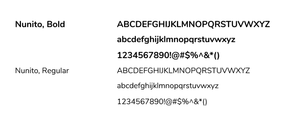
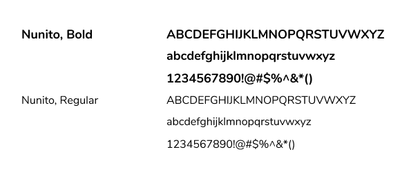

amway.
Mobile Transportation App
for accessibility matters
Role
UX Designer
UI Designer
Platforms
Illustrator
Balsamiq
Adobe XD
Duration
3 months
Date
2018

OVERVIEW
background
This was a User Research and Design school project
for my Global Business and Digital Arts 103 course
(User Experience Design). I chose to revisit this
project as a personal design challenge for myself;
upon learning more about user research and design
– I wanted to apply my knowledge and see if I can
further improve the application, solution, UI, and
overall concept as it has potential in being used in
real life especially as it pertains to individuals with
accessibility matters.
project
We are to explore and create digital solutions to help eliminate or improve pain points within our community. This project challenges our design thinking and keeps our focus on the end-user and the market we are targeting.
challenge
How can we use technology to alleviate or possibly eliminate the daily challenges of individuals with accessibility matters?
RESEARCH
market
As the target market is very large,
we wanted to focus on the more substantial
part of the market, which is the physical
aspect of accessibility matters.
We live in an “always-on-the-go” environment,
that requires a lot of movement, but for individuals
with physical disabilities, it can be challenging for
most to get around places especially if such
locations are not accessibility friendly.
interviews
We interviewed candidates who were willing to share
their challenges when travelling to places in the town
of Stratford and get a picutre of thier day in a life
with a physical disability. They also shared their input
on how transportation could be made easier for them.
1. Running Errands & Simple Hangouts are hard and awful Weather can make it harder
2. Lack of Mobility Aid or Services plus, the buses get Packed & Full
3. Lack of Information they can look to for Safety travels
findings
This is what we found upon interviewing
our candidates:
1. Disabilities are not always visible and it should not define them
2. Human Interaction goes a long way! However, their independence should also be respected
user persona
We also created a user persona as a guide to further understand our target market.

INSPIRATIONS
google maps
provides the layout of roads, the locations of cities
and towns, state boundaries, geographical features,
restaurant reviews and satellite images.
Can help with finding Acessibility friendly routes,
forms of transportation, restaurants, parks, and other
locations.

health apps
Keeping track of your health and having a community within
the app to provide information and their experiences provides
users a sense of comfort and ease. This would help keep track of
the users' well-being, current health and overall safety. This
can be based on apps as myFitness Pal and Samsung Health App.
ideation
My team and I then proceeded to build our idea & plan our application system, below are wireframe sketches of the app and a rough outline of the system:


These are the low fidelity mock-ups of how we thought our app would look like:

These are rough planning of what assets we'd like to include in our application
as well as our slow design progress to our high fidelity mock-up:

RESULTS
AmWay is a mobile app that provides transportation information,
community, professional services, training, programs and travel
planning for individuals with physical accessibility matters.
Easy to navigate and with a simple profile.

Users of the app can create an account as a trained Support Individual or as a Beneficary. Both users can connect, plan city-travels (with or without the assitance of a Support Individual) and participate in our in-app accessibility-travel programs.
From running errands to simple city-travels, why not schedule it all?
AmWay will show you the best mobility friendly routes and types of mobility friendly transportation to take to a place of your choice or recommended by a fellow Beneficiary user included in the map. A Support Individual will always be available for assitance if and when needed.
Don't sweat the transportation challenges, just filter them out

You get to customize your travels by filtering your trip: from avoiding highways, stairs and cities, to preferring types of mobility-friendly transportation and environment such as buses and spacious areas. You can make your travel as comfortable as possible.
All information needed available in the palm of your hand
AmWay contains useful information that can be accessed by all on-the-go such as: training to be a Transit Support person, Beneficiary Travel training, Using special services, Travel Plan, EZ-Routes, and connecting with other users.
You can attend training sessions while on-the-go
Online training is available to further understand the perks of AmWay, information in mobility aid and services as well as travel training for support individuals and beneficiaries such as: What to do in crowded vechicles and environments?
Safety is key, so is community, thus both is covered and available


You can connect with users, plan trips together and alleviate alleviate some transportation challenges. In a situation where medical help is needed, emergency contact is availble in the app, this app's future implementation of wearable tech would determine your current health as well.
VISUAL DESIGN
 

FINAL THOUGHTS
designing
Upon designing this app, we felt inconsistent
with its process and solution thus posed many
questions: The main challenge being:
how would a mobile app that also requires
certain amount of motor skills to navigate
through be of help to individuals who are
physically impaired? We wanted ease and
comfort for users and not add another
routinely task to their daily life.
The IoT aspect is very technical and
expensive to implement, especially since
the IoT concept has not been solidified
– this already pose many problems with
regards to the user’s independence and privacy.
next steps
Solidify idea and solution and ensure its proper use and benefits to the users as well as keep a user-centric design: we would hopefully create a more secure solution that would not disclose any health information about the users to the public even to private app users. Solidify the IoT integration within the app and make use of the concept to better help individuals with accessibility issues!